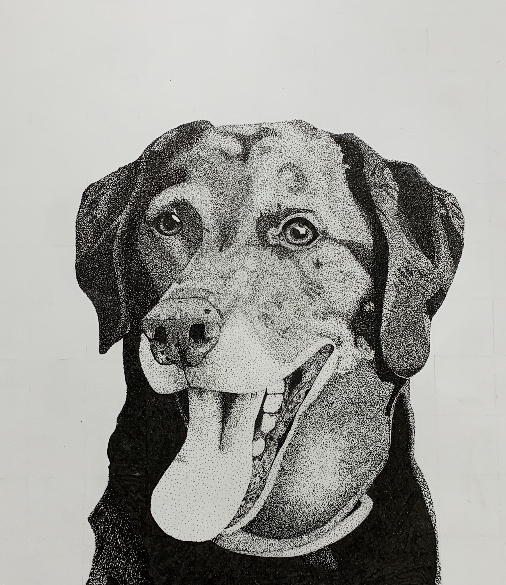

Portrait of Cocoa
previous
-
home
-
next

Personally this stippling portriat is my favorite art piece I've created over the years. Seeing this portriat all the time just pushes me to become a better artist.